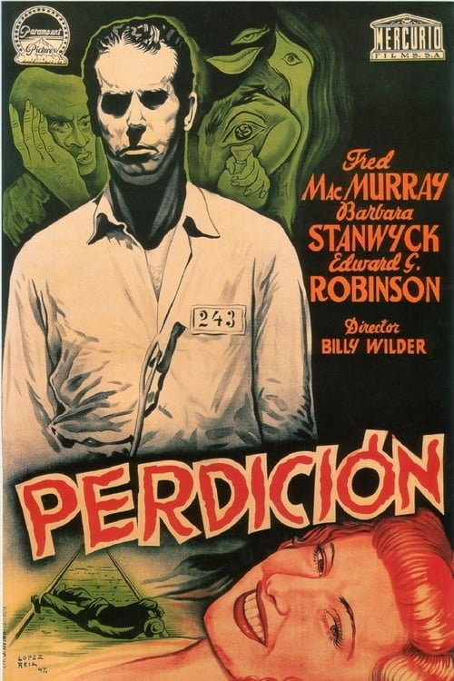

Perdición (1944)
Sinopsis Rápida
¿Qué harías por dinero? Una seductora mujer y un ambicioso vendedor de seguros tejen una red de mentiras y engaños con consecuencias mortales en este clásico del cine negro.
Sinopsis Detallada
Perdición es una obra maestra del suspense que sigue la peligrosa relación entre Walter Neff, un vendedor de seguros, y Phyllis Dietrichson, una mujer casada que busca asesinar a su adinerado esposo. Su plan, aparentemente perfecto, se complica por la intensidad de su atracción y una serie de imprevistos que ponen en jaque su libertad y sus vidas. La película explora temas de codicia, manipulación y la naturaleza oscura de la condición humana con una maestría cinematográfica inigualable. El guion brillante, la dirección precisa y las actuaciones excepcionales de Fred MacMurray y Barbara Stanwyck crean una atmósfera de tensión que te mantendrá al borde del asiento hasta el final.
¿Por qué tenés que verla?
- Una trama retorcida e impredecible que te mantendrá adivinando hasta el final.
- La inolvidable química entre Barbara Stanwyck y Fred MacMurray, que eleva la tensión dramática a otro nivel.
- Su influencia perdurable en el género del thriller y el cine negro, inspirando innumerables películas posteriores.
- Una dirección maestra que crea una atmósfera opresiva y elegante a la vez.
Idea Extra
Análisis de los símbolos y la iconografía del film noir en 'Perdición', comparándolo con otras películas del género.
{{CONTENIDO_RELACIONADO}}